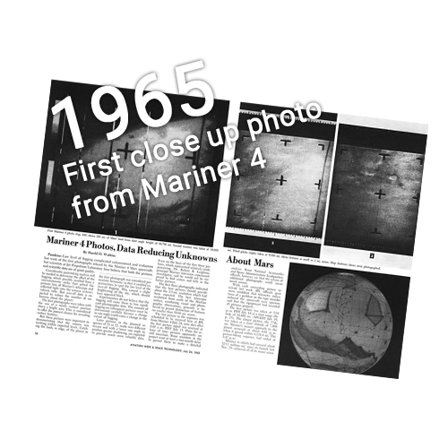
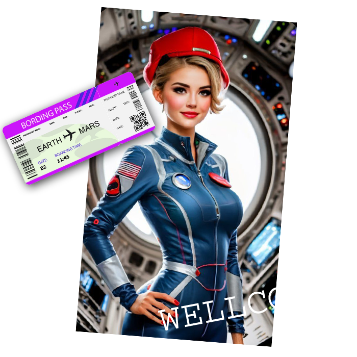
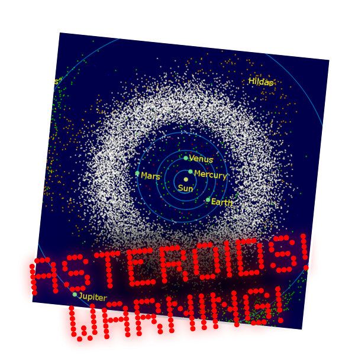

In the grand tapestry of the cosmos, there exists a celestial highway - a route through the vast expanse of space that promises to connect our humble blue planet to Mars. This celestial bridge, known as the "Cycler to Mars".
The Red Planet and our own Earth are celestial dancers, twirling in their respective orbits around the Sun, and a distance betweent it is always different! The flight to Mars is an extremely difficult journey, requiring a lot of costs, fuel and time, and astrophysicists are making it more efficient by calculating its path.
Mars cyclers take advantage of the unique rhythms of the cosmos. They follow a trajectory that allows them to "cycle" between Earth and Mars, riding the gravitational currents like cosmic surfers! It is not just a spaceship; it's a symbol of our relentless spirit, a testament to our determination to reach for the stars, and a promise of a brighter future for humanity.
En el gran tapiz del cosmos existe una autopista celestial, una ruta a través de la vasta extensión del espacio que promete conectar nuestro humilde planeta azul con Marte. Este puente celeste, conocido como el "Ciclista a Marte".
El Planeta Rojo y nuestra propia Tierra son bailarines celestiales, girando en sus respectivas órbitas alrededor del Sol, ¡y la distancia entre ellos siempre es diferente! El vuelo a Marte es un viaje extremadamente difícil, que requiere muchos costes, combustible y tiempo, y los astrofísicos lo hacen más eficiente calculando su trayectoria.
Los cicladores de Marte aprovechan los ritmos únicos del cosmos. Siguen una trayectoria que les permite "girar" entre la Tierra y Marte, navegando por las corrientes gravitacionales como surfistas cósmicos. No es sólo una nave espacial; es un símbolo de nuestro espíritu implacable, un testimonio de nuestra determinación de alcanzar las estrellas y una promesa de un futuro mejor para la humanidad.
في نسيج الكون الكبير، يوجد طريق سماوي سريع - طريق عبر مساحة شاسعة من الفضاء يَعِد بربط كوكبنا الأزرق المتواضع بالمريخ. يُعرف هذا الجسر السماوي باسم "الدراجة إلى المريخ".
الكوكب الأحمر وأرضنا راقصان سماويان، يدوران في مداريهما حول الشمس، والمسافة بينهما مختلفة دائمًا! الرحلة إلى المريخ هي رحلة صعبة للغاية، وتتطلب الكثير من التكاليف والوقود والوقت، ويعمل علماء الفيزياء الفلكية على جعلها أكثر كفاءة من خلال حساب مسارها.
يستفيد راكبو الدراجات على المريخ من الإيقاعات الفريدة للكون. إنهم يتبعون مسارًا يسمح لهم "بالدورة" بين الأرض والمريخ، وركوب تيارات الجاذبية مثل راكبي الأمواج الكونيين! إنها ليست مجرد سفينة فضاء. إنه رمز لروحنا التي لا هوادة فيها، وشهادة على تصميمنا على الوصول إلى النجوم، ووعد بمستقبل أكثر إشراقا للبشرية.

Today is November 19, 2037, Osiris company is pleased to welcome you on board our Spaceship! Mars cyclers, like cosmic taxis, execute elegantly maneuvers, sweeping in close proximity to Earth to collect both eager passengers and precious cargo. Shuttles and space elevators diligently play their roles, facilitating the seamless transfer of goods and travelers to it, ensuring their timely refueling before embarking on their cosmic odyssey.
¡Hoy es 19 de noviembre de 2037, la compañía Osiris se complace en darle la bienvenida a bordo de nuestra nave espacial! Los ciclistas de Marte, como taxis cósmicos, ejecutan maniobras elegantes, deslizándose muy cerca de la Tierra para recoger tanto a pasajeros ansiosos como a una valiosa carga. Los transbordadores y los ascensores espaciales desempeñan diligentemente su papel, facilitando el traslado fluido de mercancías y viajeros hasta ellos, asegurando su oportuno reabastecimiento de combustible antes de embarcarse en su odisea cósmica.
اليوم هو 19 نوفمبر 2037، يسر شركة أوزوريس أن ترحب بكم على متن سفينة الفضاء الخاصة بنا! يقوم راكبو الدراجات على المريخ، مثل سيارات الأجرة الكونية، بتنفيذ مناورات أنيقة، حيث يقومون بالتجوال على مقربة من الأرض لجمع الركاب المتحمسين والبضائع الثمينة. وتؤدي المكوكات والمصاعد الفضائية أدوارها بجد، مما يسهل النقل السلس للبضائع والمسافرين إليها، مما يضمن إعادة التزود بالوقود في الوقت المناسب قبل الشروع في رحلتهم الكونية.
Departing Earth's orbit with the momentum gained from its rotational and orbital speed, the spacecraft must carefully decelerate to match the slower orbital speed of Mars. Achieving precise orbital insertion around Mars is crucial, demanding careful calculations and maneuvers to seamlessly transition from the high-speed interplanetary journey to a stable orbit around Mars. This process underscores the complexity and precision required for successful interplanetary travel.
Al salir de la órbita de la Tierra con el impulso obtenido de su velocidad orbital y de rotación, la nave espacial debe desacelerar cuidadosamente para igualar la velocidad orbital más lenta de Marte. Lograr una inserción orbital precisa alrededor de Marte es crucial, ya que exige cálculos y maniobras cuidadosos para realizar una transición sin problemas del viaje interplanetario de alta velocidad a una órbita estable alrededor de Marte. Este proceso subraya la complejidad y precisión necesarias para un viaje interplanetario exitoso.
عند مغادرة مدار الأرض بالزخم المكتسب من سرعتها الدورانية والمدارية، يجب أن تتباطأ المركبة الفضائية بعناية لتتناسب مع السرعة المدارية الأبطأ للمريخ. يعد تحقيق إدخال مداري دقيق حول المريخ أمرًا بالغ الأهمية، ويتطلب حسابات ومناورات دقيقة للانتقال بسلاسة من الرحلة عالية السرعة بين الكواكب إلى مدار مستقر حول المريخ. تؤكد هذه العملية على التعقيد والدقة المطلوبة للسفر الناجح بين الكواكب.
The spaceship for Earth to Mars travel is a marvel of technology, featuring advanced life support, artificial gravity, and hydroponic systems for fresh produce. The carefully planned food supply includes dehydrated nutritious meals and protein-rich options. Recreational spaces with virtual reality simulations enhance psychological well-being, and advanced waste recycling minimizes resource dependence. This holistic setup ensures the crew's sustenance and morale during the journey from Earth to Mars.
La nave espacial para viajar de la Tierra a Marte es una maravilla de la tecnología, que cuenta con soporte vital avanzado, gravedad artificial y sistemas hidropónicos para productos frescos. El suministro de alimentos cuidadosamente planificado incluye comidas nutritivas deshidratadas y opciones ricas en proteínas. Los espacios recreativos con simulaciones de realidad virtual mejoran el bienestar psicológico y el reciclaje avanzado de residuos minimiza la dependencia de recursos. Esta configuración holística garantiza el sustento y la moral de la tripulación durante el viaje de la Tierra a Marte.
تعد سفينة الفضاء للسفر من الأرض إلى المريخ أعجوبة تكنولوجية، حيث تتميز بدعم الحياة المتقدم والجاذبية الاصطناعية وأنظمة الزراعة المائية للمنتجات الطازجة. تشتمل الإمدادات الغذائية المخططة بعناية على وجبات مغذية مجففة وخيارات غنية بالبروتين. تعمل المساحات الترفيهية مع محاكاة الواقع الافتراضي على تعزيز الرفاهية النفسية، كما أن إعادة تدوير النفايات المتقدمة تقلل من الاعتماد على الموارد. يضمن هذا الإعداد الشامل القوت والروح المعنوية للطاقم أثناء الرحلة من الأرض إلى المريخ.

The asteroid belt near Mars orbit showcases remnants from the solar system's early days. The vast majority of asteroids pose no threat to spacecraft, ensuring a safe and awe-inspiring passage through this ancient cosmic terrain. You can see the satellites around Mars - Phobos and Demos. Artificial satellites sended by humans are working nearby. Reconnaissance Orbiter and MAVEN captures martian beauty, while Mars Express explores its depths. Odyssey transmits messages, InSight listens for secrets. Together they create scientific discoveries. It's amazing that they haven't left their resource yet!
El cinturón de asteroides cerca de la órbita de Marte muestra restos de los primeros días del sistema solar. La gran mayoría de los asteroides no representan una amenaza para las naves espaciales, lo que garantiza un paso seguro e impresionante a través de este antiguo terreno cósmico. Puedes ver los satélites alrededor de Marte: Fobos y Demos. En las cercanías trabajan satélites artificiales enviados por humanos. Reconnaissance Orbiter y MAVEN capturan la belleza marciana, mientras que Mars Express explora sus profundidades. Odyssey transmite mensajes, InSight escucha secretos. Juntos crean descubrimientos científicos. ¡Es sorprendente que aún no hayan abandonado su recurso!
يعرض حزام الكويكبات بالقرب من مدار المريخ بقايا من الأيام الأولى للنظام الشمسي. لا تشكل الغالبية العظمى من الكويكبات أي تهديد للمركبات الفضائية، مما يضمن مرورًا آمنًا ومذهلًا عبر هذه التضاريس الكونية القديمة. يمكنك رؤية الأقمار الصناعية حول المريخ - فوبوس وديموس. تعمل الأقمار الصناعية التي يرسلها البشر في مكان قريب. تلتقط مركبة Reconnaissance Orbiter وMAVEN جمال المريخ، بينما تستكشف Mars Express أعماقه. أوديسي ينقل الرسائل، إنسايت يستمع للأسرار. معًا يخلقون اكتشافات علمية. إنه لأمر مدهش أنهم لم يتركوا مواردهم بعد!
After 8 months, we are passing close to Mars, it’s time to send down people, modules with ecosystems, fuel, and everything necessary for life, colonization and research. We can collect past settlers, soil samples, scientific artifacts. Radio signals between Mars and Earth take a mere 5 to 20 minutes, ensuring seamless communication and preventing any dull moments for travelers who remain engaged with Earth's media and chats. The entire earth-mars-earth circle takes 26 months, of which the longest part is the journey back to earth. But if we have several Cyclers, then we can think of convenient transfers.
Después de 8 meses, estamos pasando cerca de Marte, es hora de enviar personas, módulos con ecosistemas, combustible y todo lo necesario para la vida, la colonización y la investigación. Podemos recolectar colonos del pasado, muestras de suelo y artefactos científicos. Las señales de radio entre Marte y la Tierra tardan apenas entre 5 y 20 minutos, lo que garantiza una comunicación fluida y evita momentos aburridos para los viajeros que permanecen conectados con los medios y los chats de la Tierra. El ciclo completo Tierra-Marte-Tierra dura 26 meses, de los cuales la parte más larga es el viaje de regreso a la Tierra. Pero si tenemos varios Cyclers, entonces podemos pensar en traslados convenientes.
بعد 8 أشهر، نقترب من المريخ، وحان الوقت لإرسال البشر والوحدات مع الأنظمة البيئية والوقود وكل ما هو ضروري للحياة والاستعمار والبحث. يمكننا جمع المستوطنين السابقين وعينات التربة والتحف العلمية. تستغرق الإشارات اللاسلكية بين المريخ والأرض ما بين 5 إلى 20 دقيقة فقط، مما يضمن التواصل السلس ويمنع أي لحظات مملة للمسافرين الذين يظلون منخرطين في وسائط ومحادثات الأرض. تستغرق دورة الأرض والمريخ والأرض بأكملها 26 شهرًا، أطول جزء منها هو رحلة العودة إلى الأرض. ولكن إذا كان لدينا العديد من راكبي الدراجات، فيمكننا التفكير في عمليات نقل مريحة.